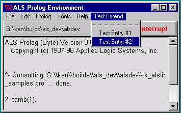

extend_main_menubar(Label, MenuEntriesList)
menu_entries_list(MenuPath, EntriesList)
menu_entries_list(Interp, MenuPath, EntriesList)
path_to_main_menu_entry(Index, SubMenuPath)
path_to_menu_entry(MenuPath, Index, SubMenuPath)
path_to_menu_entry(Interp, MenuPath, Index, SubMenuPath)
add_to_main_menu_entry(Index, Entry)
extend_cascade(Entry, MenuPath, Interp)
The general call
extend_main_menubar(Label, MenuEntriesList)
adds entries to the main menubar in the ALS Prolog development environment. Label should be the label which will appear on the menu bar, and MenuEntriesList is a Prolog list containing menu entry descriptors, which are either an Atom alone, or an expression of the form
Atom + Expr
where Atom is a prolog atom which will serve as the new menu entry, and Expr is a menu entry action expression, which can be one of the following :
tcl(TclExpr)
cascade(SubLabel, SubList)
PrologCall
Here, TclExpr can be any Tcl/Tk expression for evaulation, and PrologCall is any ground Prolog goal. The entry
cascade(SubLabel, SubList)
allows one to create menu entries which are themselves cascades. In this case, SubLabel must be an atom which will serve as the entry’s label, and SubList is (recursively) a list of menu entry descriptors.
If MenuPath is a Tk path to a menu (top level or subsidiary), then the call
menu_entries_list(MenuPath, EntriesList)
will succeed if EntriesList is the list of labels for the entries on that menu, in order. As usual,
menu_entries_list(MenuPath, EntriesList)
:-
menu_entries_list(tcli, MenuPath, EntriesList).
Paths to menu entries are lists of integers representing the path from the root of the menu tree to a particular entry. When one indexes menu entries, the indicies are integers beginning at 0. If MenuPath is a Tk path to a menu (top level or subsidiary), and if Index is an integer >= 0, and if the Index'th entry of MenuPath is a cascade, so that it has an associated menu, then SubMenuPath is a path to that associated menu.
As usual,
path_to_main_menu_entry(Index, SubMenuPath)
:-
path_to_menu_entry(shl_tcli, '.topals.mmenb', Index, SubMenuPath).
path_to_menu_entry(MenuPath, Index, SubMenuPath)
:-
path_to_menu_entry(tcli, MenuPath, Index, SubMenuPath).
Finally, one can add new entries at the ends(bottoms) of existing menu cascades, as follows:
add_to_main_menu_entry(Index, Entry)
:-
path_to_main_menu_entry(Index, MenuPath),
extend_cascade(Entry, MenuPath, shl_tcli).
The predicate
extend_cascade(Entry, MenuPath, Interp)
adds Entry to the end of menu MenuPath under interpreter Interp.
After executing the call
?- extend_main_menubar('Test Extend', ['Test Entry #1', 'Test Entry #2']).
the main listener window would look like this when clicking on the newly added menubar entry:

Suppose we define
test_write
:-
printf(user_output, 'This is a test ...\n', []),
flush_input(user_input).
and replace the call considered above by:
?- extend_main_menubar(‘Test Extend’, [‘Test Entry #1’ + tcl(‘bell’), ‘Test Entry #2’ + test_write]).
Then the appearance of the main menu and the new pulldown will be the same, but chooseing Test Entry #1 will cause the bell to ring, and choosing Test Entry #2 will cause
This is a test ...
to be written on the listener console.
Note that the following is the case :
?- menu_entries_list(shl_tcli, ' .topals.mmenb ', EntriesList).
EntriesList = [File, Edit, Prolog, Tools, Help].
And,
?- path_to_main_menu_entry(4, SubMenuPath).
SubMenuPath = .topals.mmenb.help
Finally,
?- add_to_main_menu_entry(3, 'My Entry' + test_write).
will add an entry at the end of the Tools cascade.